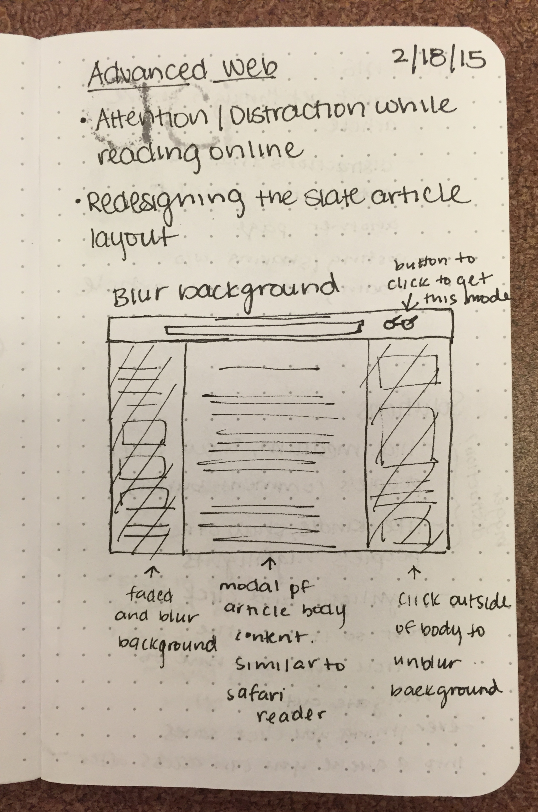
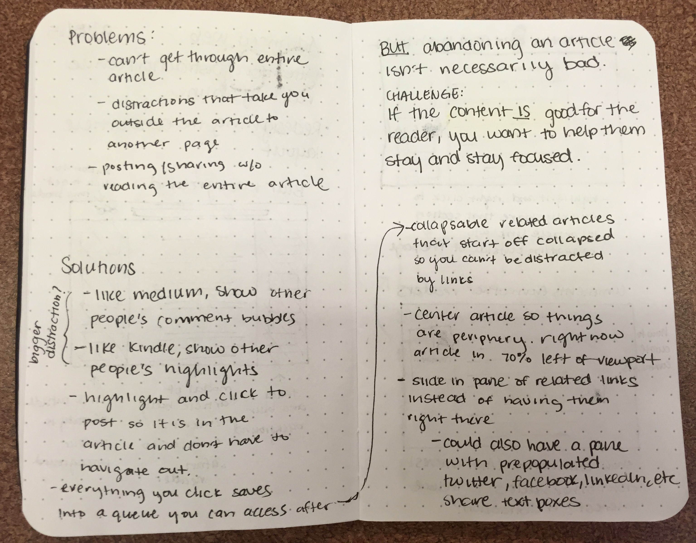
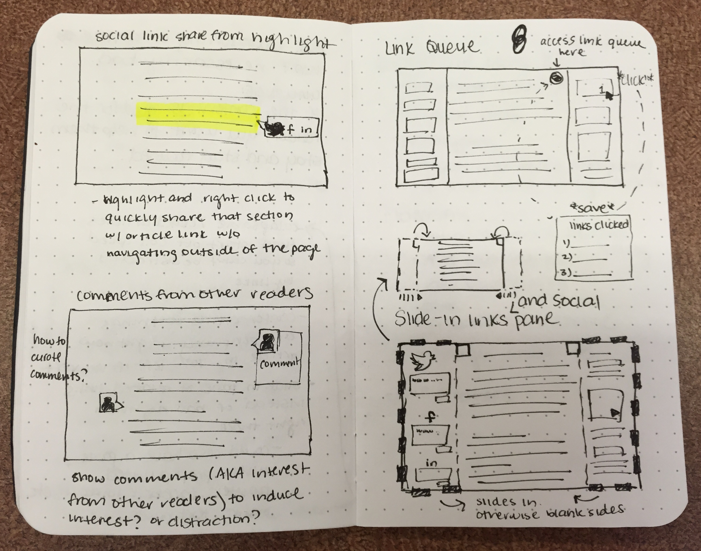
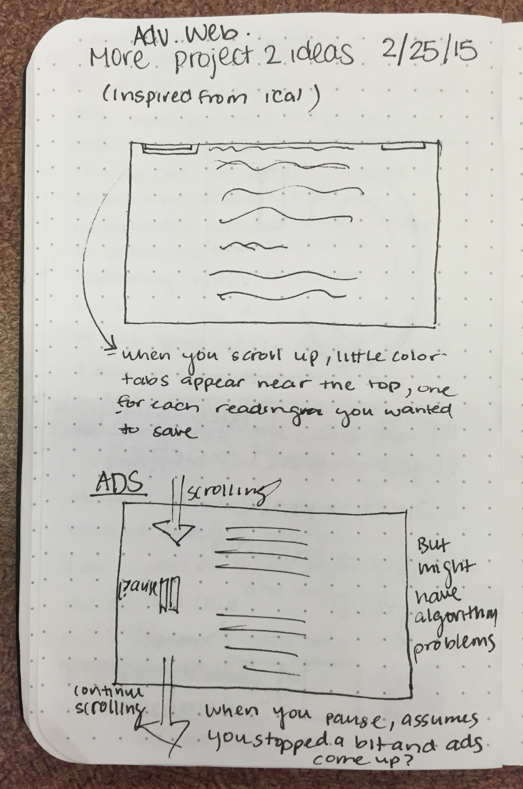
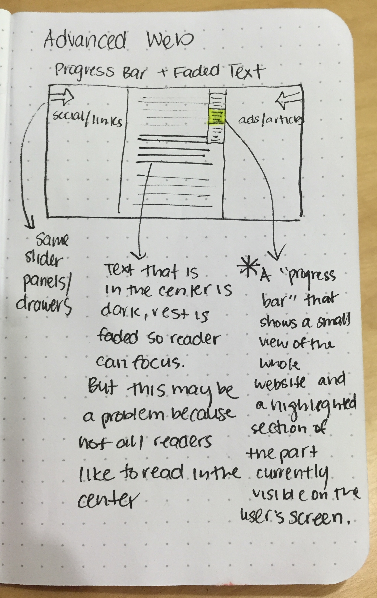
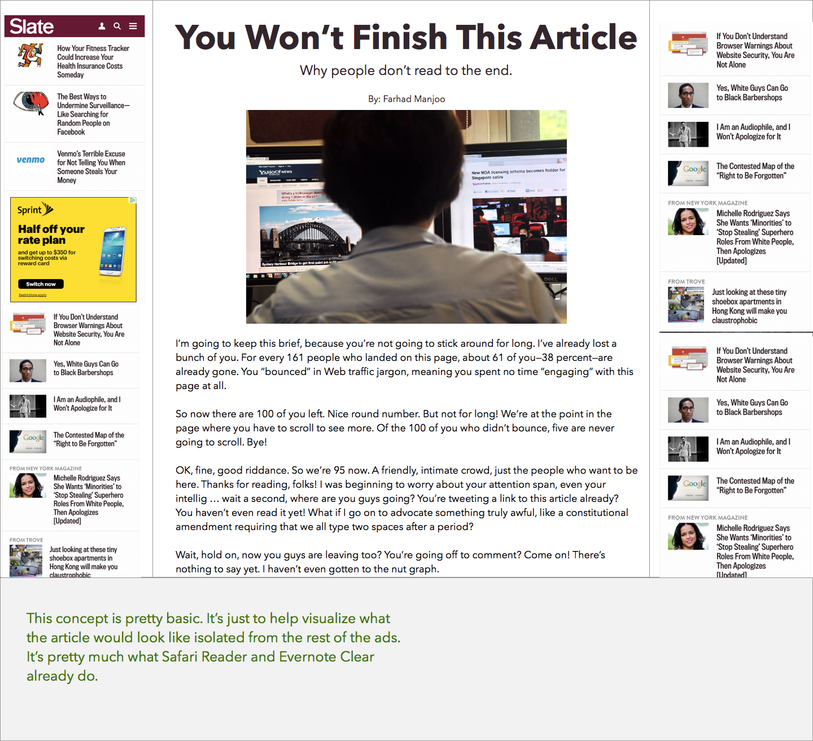
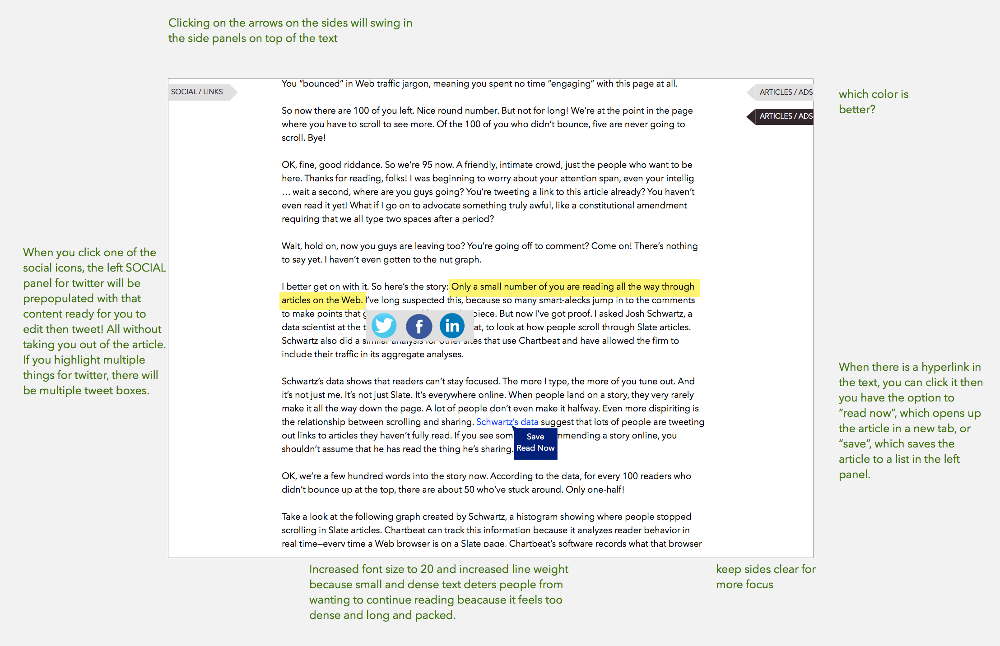
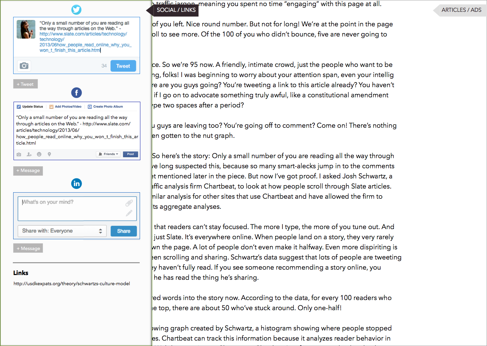
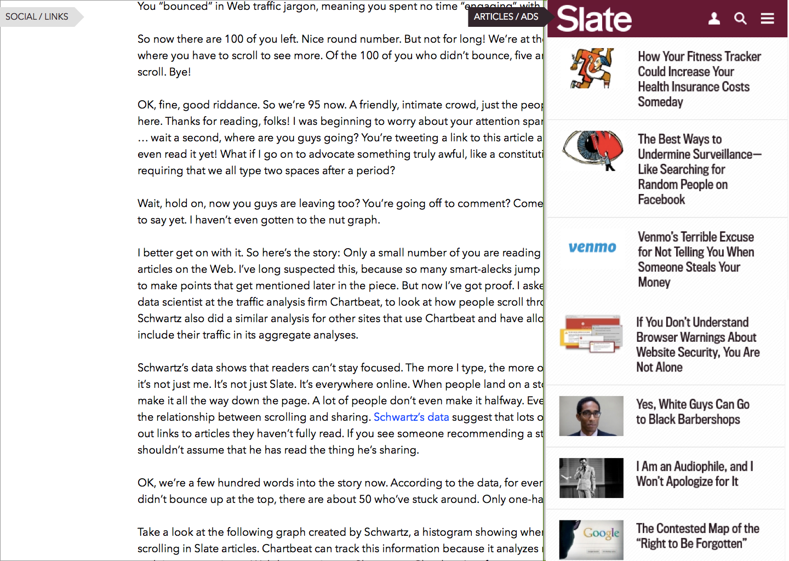

Designing For Focus
Spring 2015
- Toolkit:
- Sketch (Bohemian Coding)/
- Sketching /
- Adobe Illustrator
Project Description
In my Advanced Web Design class, we are currently working on a design challenge to create a prototype for an interctive system which both facilitates focused concentration when viewing text and image content, without eliminating user ability to interact with the content, connect to externally referenced content, links, and site-based related content. We had to consider what it means to consume content on the web, inspired by the ideas explored in "The Shallows" by Nicholas Carr.
We were tasked to create a design prototype which demonstrates an environment facilitating concentration on the part of the reader/user while also enabling that user to connect on and off of the parent website. The solution must account for the fact that a website still relies on advertising money so killing the ads or sponsored content entirely was not a realistic idea.
Concept Iterations
I am still coming up with concept iterations, but here are the concept sketches that I'm currently working on. My basic idea revolves around how to keep the user focused on the content they're currently reading.
    Here are the beginnings of Sketch mockups that I'm putting together. After I've put together a few iterations I will do some hallway tests to see which concept proves to be the best.


